A.1 Tipos de objetos
# Librería sp:classes and methods for spatial data
library(sp) # install.packages('sp')
# Tipos de objetos
getClass("Spatial")## Class "Spatial" [package "sp"]
##
## Slots:
##
## Name: bbox proj4string
## Class: matrix CRS
##
## Known Subclasses:
## Class "SpatialPoints", directly
## Class "SpatialMultiPoints", directly
## Class "SpatialGrid", directly
## Class "SpatialLines", directly
## Class "SpatialPolygons", directly
## Class "SpatialPointsDataFrame", by class "SpatialPoints", distance 2
## Class "SpatialPixels", by class "SpatialPoints", distance 2
## Class "SpatialMultiPointsDataFrame", by class "SpatialMultiPoints", distance 2
## Class "SpatialGridDataFrame", by class "SpatialGrid", distance 2
## Class "SpatialLinesDataFrame", by class "SpatialLines", distance 2
## Class "SpatialPixelsDataFrame", by class "SpatialPoints", distance 3
## Class "SpatialPolygonsDataFrame", by class "SpatialPolygons", distance 2Clases del tipo S4 (definicion formal con componentes denominadas slots)
Tipo base:
Spatialbbox(bounding box): matriz con los límites mínimo y máximo de las coordenadas (principalmente para representación gráfica; normalmente se genera automáticamente).proj4string: cadena de texto que define el sistema de coordenadas de referencia (realmente objeto tipo CRS, coordinate reference system) en formato PROJ.4.CRS(as.character(NA))para indicar no disponible/faltanteCRS(+proj=longlat)para coordenadas geográficasCRS(+proj=longlat +ellps=WGS84)estándar GPS (World Geodetic System of 1984)
xbbox <- matrix( c(0,0,1,1), ncol=2)
colnames(xbbox) <- c("min", "max") # Normalmente la bbox se genera automáticamente al crear el objeto
x <- Spatial(xbbox, proj4string = CRS(as.character(NA)))
x## An object of class "Spatial"
## Slot "bbox":
## min max
## [1,] 0 1
## [2,] 0 1
##
## Slot "proj4string":
## CRS arguments: NALos objetos son del tipo S4.
Los componentes se denominan slots.
Se acceden con la función slot() o el operador @.
slot(x,'bbox')## min max
## [1,] 0 1
## [2,] 0 1x@bbox ### en s4 se pone @ en vez de $.## min max
## [1,] 0 1
## [2,] 0 1El paquete sp dispone también de funciones para acceder/establecer los componentes:
bbox(x)## min max
## [1,] 0 1
## [2,] 0 1proj4string(x) <- CRS("+proj=longlat +ellps=WGS84") # ImportanteA.1.1 SpatialPoints y SpatialPointsDataFrame
Tipo
SpatialPointsSlots:
coords, bbox, proj4stringObjeto de datos básico para procesos puntuales.
Tipo
SpatialPointsDataFrameSlots:
data, coords.nrs, coords, bbox, proj4stringObjeto de datos básico para procesos geoestadísticos (y procesos puntuales marcados).
A.1.1.1 Ejemplo SpatialPoints
load("datos/caballa.galicia.RData")
str(caballa.galicia) # data.frame(attr(caballa.galicia, "variable.labels"))## 'data.frame': 676 obs. of 12 variables:
## $ id : Factor w/ 31 levels "A1","A2","B1",..: 17 17 19 19 19 21 21 23 23 23 ...
## $ x : num -9.4 -9.44 -9.44 -9.4 -9.47 ...
## $ y : num 43 43 43 43 42.8 ...
## $ fecha : num 1.32e+10 1.32e+10 1.32e+10 1.32e+10 1.32e+10 ...
## $ semana : num 7 7 7 7 7 7 8 8 8 8 ...
## $ mes : num 2 2 2 2 2 2 2 2 2 2 ...
## $ ano : num 2001 2001 2001 2001 2001 ...
## $ cpue : num 18 240 240 18 118 ...
## $ chl_a : num NA NA 7.08 7.08 7.08 ...
## $ sust_amar: num NA NA 0.356 0.356 0.356 ...
## $ sst : num 14.2 14.2 16 16 16 16.1 16 15.9 15.9 15.9 ...
## $ lcpue : num 2.89 5.48 5.48 2.89 4.77 ...
## - attr(*, "variable.labels")= Named chr [1:12] "Cuadricula " "" "" "" ...
## ..- attr(*, "names")= chr [1:12] "id" "x" "y" "fecha" ...
## - attr(*, "codepage")= int 1252plot(y~x, data = caballa.galicia)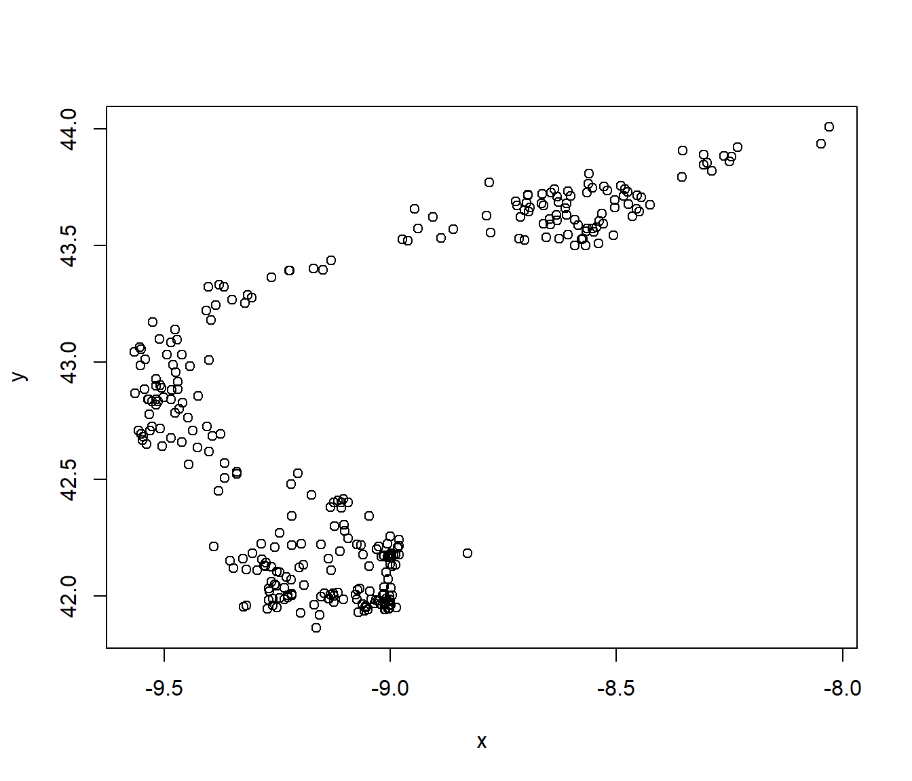
spt <- SpatialPoints(caballa.galicia[,c("x","y")], proj4string = CRS("+proj=longlat +ellps=WGS84"))
summary(spt)## Object of class SpatialPoints
## Coordinates:
## min max
## x -9.56538 -8.030065
## y 41.86240 44.010800
## Is projected: FALSE
## proj4string : [+proj=longlat +ellps=WGS84 +no_defs]
## Number of points: 676str(spt)## Formal class 'SpatialPoints' [package "sp"] with 3 slots
## ..@ coords : num [1:676, 1:2] -9.4 -9.44 -9.44 -9.4 -9.47 ...
## .. ..- attr(*, "dimnames")=List of 2
## .. .. ..$ : chr [1:676] "1" "2" "3" "4" ...
## .. .. ..$ : chr [1:2] "x" "y"
## ..@ bbox : num [1:2, 1:2] -9.57 41.86 -8.03 44.01
## .. ..- attr(*, "dimnames")=List of 2
## .. .. ..$ : chr [1:2] "x" "y"
## .. .. ..$ : chr [1:2] "min" "max"
## ..@ proj4string:Formal class 'CRS' [package "sp"] with 1 slot
## .. .. ..@ projargs: chr "+proj=longlat +ellps=WGS84 +no_defs"
## .. .. ..$ comment: chr "GEOGCRS[\"unknown\",\n DATUM[\"Unknown based on WGS84 ellipsoid\",\n ELLIPSOID[\"WGS 84\",6378137,298"| __truncated__Hay muchos métodos (funciones genéricas) implementados para objetos sp:
# plot(spt)
plot(spt, axes=TRUE)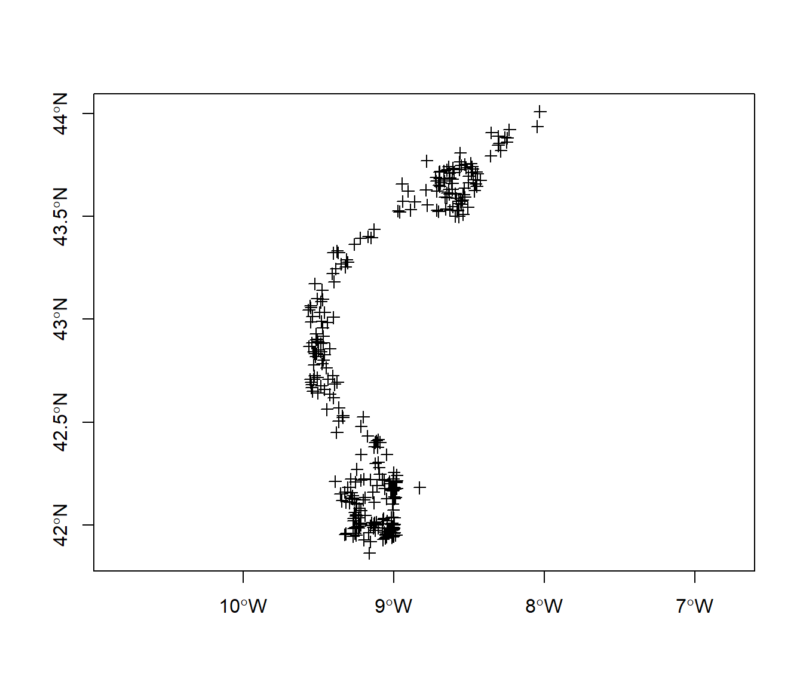
A.1.1.2 Ejemplo SpatialPointsDataFrame
Importante (para preparar datos):
sdf1 <- SpatialPointsDataFrame(caballa.galicia[,c(2,3)], caballa.galicia[,-c(2,3)], proj4string = CRS("+proj=longlat +ellps=WGS84"))
str(sdf1)## Formal class 'SpatialPointsDataFrame' [package "sp"] with 5 slots
## ..@ data :'data.frame': 676 obs. of 10 variables:
## .. ..$ id : Factor w/ 31 levels "A1","A2","B1",..: 17 17 19 19 19 21 21 23 23 23 ...
## .. ..$ fecha : num [1:676] 1.32e+10 1.32e+10 1.32e+10 1.32e+10 1.32e+10 ...
## .. ..$ semana : num [1:676] 7 7 7 7 7 7 8 8 8 8 ...
## .. ..$ mes : num [1:676] 2 2 2 2 2 2 2 2 2 2 ...
## .. ..$ ano : num [1:676] 2001 2001 2001 2001 2001 ...
## .. ..$ cpue : num [1:676] 18 240 240 18 118 ...
## .. ..$ chl_a : num [1:676] NA NA 7.08 7.08 7.08 ...
## .. ..$ sust_amar: num [1:676] NA NA 0.356 0.356 0.356 ...
## .. ..$ sst : num [1:676] 14.2 14.2 16 16 16 16.1 16 15.9 15.9 15.9 ...
## .. ..$ lcpue : num [1:676] 2.89 5.48 5.48 2.89 4.77 ...
## ..@ coords.nrs : num(0)
## ..@ coords : num [1:676, 1:2] -9.4 -9.44 -9.44 -9.4 -9.47 ...
## .. ..- attr(*, "dimnames")=List of 2
## .. .. ..$ : chr [1:676] "1" "2" "3" "4" ...
## .. .. ..$ : chr [1:2] "x" "y"
## ..@ bbox : num [1:2, 1:2] -9.57 41.86 -8.03 44.01
## .. ..- attr(*, "dimnames")=List of 2
## .. .. ..$ : chr [1:2] "x" "y"
## .. .. ..$ : chr [1:2] "min" "max"
## ..@ proj4string:Formal class 'CRS' [package "sp"] with 1 slot
## .. .. ..@ projargs: chr "+proj=longlat +ellps=WGS84 +no_defs"
## .. .. ..$ comment: chr "GEOGCRS[\"unknown\",\n DATUM[\"Unknown based on WGS84 ellipsoid\",\n ELLIPSOID[\"WGS 84\",6378137,298"| __truncated__Una alernativa normalmente preferible es modificar directamente
el data.frame:
sdf <- caballa.galicia
coordinates(sdf) <- c("x", "y") # Recomendación
proj4string(sdf) <- CRS("+proj=longlat +ellps=WGS84") # También sdf@proj4string <- CRS("+proj=longlat +ellps=WGS84")
str(sdf)## Formal class 'SpatialPointsDataFrame' [package "sp"] with 5 slots
## ..@ data :'data.frame': 676 obs. of 10 variables:
## .. ..$ id : Factor w/ 31 levels "A1","A2","B1",..: 17 17 19 19 19 21 21 23 23 23 ...
## .. ..$ fecha : num [1:676] 1.32e+10 1.32e+10 1.32e+10 1.32e+10 1.32e+10 ...
## .. ..$ semana : num [1:676] 7 7 7 7 7 7 8 8 8 8 ...
## .. ..$ mes : num [1:676] 2 2 2 2 2 2 2 2 2 2 ...
## .. ..$ ano : num [1:676] 2001 2001 2001 2001 2001 ...
## .. ..$ cpue : num [1:676] 18 240 240 18 118 ...
## .. ..$ chl_a : num [1:676] NA NA 7.08 7.08 7.08 ...
## .. ..$ sust_amar: num [1:676] NA NA 0.356 0.356 0.356 ...
## .. ..$ sst : num [1:676] 14.2 14.2 16 16 16 16.1 16 15.9 15.9 15.9 ...
## .. ..$ lcpue : num [1:676] 2.89 5.48 5.48 2.89 4.77 ...
## ..@ coords.nrs : int [1:2] 2 3
## ..@ coords : num [1:676, 1:2] -9.4 -9.44 -9.44 -9.4 -9.47 ...
## .. ..- attr(*, "dimnames")=List of 2
## .. .. ..$ : chr [1:676] "1" "2" "3" "4" ...
## .. .. ..$ : chr [1:2] "x" "y"
## ..@ bbox : num [1:2, 1:2] -9.57 41.86 -8.03 44.01
## .. ..- attr(*, "dimnames")=List of 2
## .. .. ..$ : chr [1:2] "x" "y"
## .. .. ..$ : chr [1:2] "min" "max"
## ..@ proj4string:Formal class 'CRS' [package "sp"] with 1 slot
## .. .. ..@ projargs: chr "+proj=longlat +ellps=WGS84 +no_defs"
## .. .. ..$ comment: chr "GEOGCRS[\"unknown\",\n DATUM[\"Unknown based on WGS84 ellipsoid\",\n ELLIPSOID[\"WGS 84\",6378137,298"| __truncated__Operaciones como en un data.frame.
names(sdf)## [1] "id" "fecha" "semana" "mes" "ano" "cpue"
## [7] "chl_a" "sust_amar" "sst" "lcpue"sdf$id # Equivalente a sdf@data$id ## [1] E2 E2 F2 F2 F2 G2 G2 H1 H1 H1 I1 I1 I2 I2 J1 J1 J1 J1 J2 J2 J2 D1 E1 F1 F1
## [26] G1 G2 H2 I2 I2 J1 J2 D1 E2 E2 F2 F1 F1 F1 F2 G1 G1 G2 G2 H2 I1 I1 I2 I2 I2
## [51] J1 J1 J2 E2 F1 F1 G1 G2 H1 H2 H2 I1 I1 I1 I1 I2 I2 I2 F1 F2 F2 G2 I1 I1 I1
## [76] I1 I2 I2 I2 I2 J1 J1 E2 F2 F2 F2 F2 G2 G2 H3 I3 I3 I3 J3 J3 J3 F2 G2 H2 F2
## [101] G2 G2 H2 I1 I1 I2 I2 J2 B2 B3 C2 C3 C3 E2 F2 F2 G2 H3 I3 B3 B3 C3 C3 C3 C4
## [126] C4 C4 I2 I2 I3 J2 J2 H2 H2 H2 I2 I2 I2 E2 F2 F2 G2 B2 B3 B3 C3 C3 C3 C4 C4
## [151] E1 F1 F1 F1 F2 G1 G1 G2 E1 F1 F2 G2 G2 H2 I2 I2 I2 J2 J2 A1 B2 B3 B3 B3 B4
## [176] B4 C3 I2 I2 J2 J2 I2 J2 I2 J2 I3 J2 J3 A1 A2 A2 B3 B4 B4 B5 C2 C3 C3 C4 D2
## [201] D3 F1 F2 C2 C2 C3 C3 C3 C4 C4 D4 H2 H2 H3 I3 B2 B3 C2 C2 C3 C3 C3 C3 C4 B2
## [226] B3 C2 C3 C3 C3 C3 C4 C4 C4 B2 C2 C2 C3 C3 C3 C3 C4 C4 C4 H2 H2 I1 I2 I2 I1
## [251] I2 I2 I2 I2 I3 J1 J2 J2 J2 J3 B2 B3 B3 B3 B3 C3 C3 C3 C3 C4 C4 C4 I2 I2 I3
## [276] I3 J2 J2 J3 J3 B2 C3 C3 C4 C4 B2 B2 B3 B3 B3 C3 C3 C3 C4 C4 B2 B2 B3 C3 C3
## [301] C3 C3 C4 D4 B2 B2 B3 C2 C2 C3 C3 C3 C3 C4 I2 J2 J2 J2 B2 B3 C2 C2 C3 C3 C4
## [326] I3 J2 J2 J3 B3 B3 B3 B4 B4 C3 C4 C4 B2 B3 C3 C3 C3 C4 C4 B3 C3 C3 C4 C4 C4
## [351] B3 B3 B3 B4 B4 C4 G2 H1 H2 H2 B3 B3 B4 C4 C4 H2 H2 I2 I2 H2 I2 J2 B3 B3 B4
## [376] C3 C4 C4 D4 B3 C3 C3 C4 C4 C4 D4 D4 H2 I2 I2 J1 J2 D1 D2 D2 D2 D2 H2 I2 E2
## [401] F2 F2 F2 E2 E2 F2 F2 E2 F2 F2 F2 G2 B2 B2 B3 B3 B3 C3 C3 C3 C4 C1 C2 C3 C3
## [426] C4 D1 D2 D4 C1 C2 C2 C3 C3 C4 I2 I2 J1 J1 J2 J2 I3 H2 H3 I2 I2 I2 I2 I2 I3
## [451] J1 J1 J1 J2 J2 J2 J2 H3 H3 I2 I3 I3 I3 I3 I3 J2 J2 J3 H3 H3 H3 I2 I2 I2 I3
## [476] I3 I3 J2 J2 G3 G3 H2 H2 H2 H2 H2 H3 G3 H2 H2 H2 E1 F1 E1 F1 E1 F1 G2 H1 H2
## [501] H2 H3 I3 C2 D1 D1 D1 D2 D2 D2 E2 E2 E2 F2 B1 B2 C2 C2 C3 D1 D1 D1 D2 E2 E2
## [526] H2 I2 I2 I2 J1 J1 J1 J2 J2 H3 H3 I3 I3 I3 I3 J3 J3 H1 I1 H3 H3 I2 I2 I3 I3
## [551] I3 I3 J2 J2 I2 I3 J2 H3 H3 I3 I3 I3 I3 J3 J3 H3 I3 I3 I3 J3 J3 H3 H3 I2 I3
## [576] I3 I3 I3 J3 J3 H3 H3 I2 I3 I3 I3 J2 J2 J3 F1 F2 G2 G2 H1 H2 H2 F1 G1 G2 I1
## [601] I2 I2 I2 J1 J1 J2 J2 J2 I2 I2 I2 I2 J2 J2 J2 J2 D1 D2 E2 E2 E2 F2 F2 G2 D1
## [626] D1 D1 D1 D2 D2 E1 E2 E2 F1 G1 G2 G2 F1 G1 G1 G1 G2 G2 G1 G2 H3 I2 I3 I3 J2
## [651] J2 J3 J3 H3 I3 I3 I3 I3 I3 J2 J3 J3 J3 J3 H3 I2 I3 I3 I3 I3 I3 I3 J3 J3 J3
## [676] J3
## 31 Levels: A1 A2 B1 B2 B3 B4 B5 C1 C2 C3 C4 D1 D2 D3 D4 E1 E2 F1 F2 G1 ... J3plot(sdf, axes = TRUE)
plot(sdf[sdf$id == "J3", ], col = "red", add = TRUE)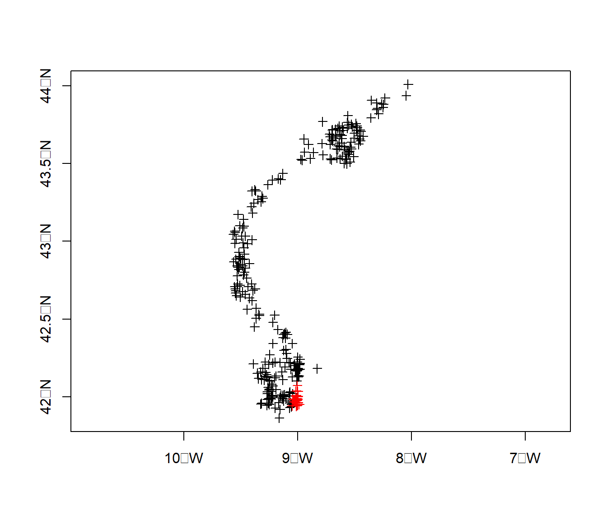
Importante (para análisis descriptivo):
summary(sdf[,c("cpue","lcpue")])## Object of class SpatialPointsDataFrame
## Coordinates:
## min max
## x -9.56538 -8.030065
## y 41.86240 44.010800
## Is projected: FALSE
## proj4string : [+proj=longlat +ellps=WGS84 +no_defs]
## Number of points: 676
## Data attributes:
## cpue lcpue
## Min. : 0.1435 Min. :-1.9411
## 1st Qu.: 1.9559 1st Qu.: 0.6708
## Median : 5.8537 Median : 1.7671
## Mean : 30.9208 Mean : 1.9087
## 3rd Qu.: 19.5349 3rd Qu.: 2.9722
## Max. :870.0000 Max. : 6.7685hist(sdf$cpue)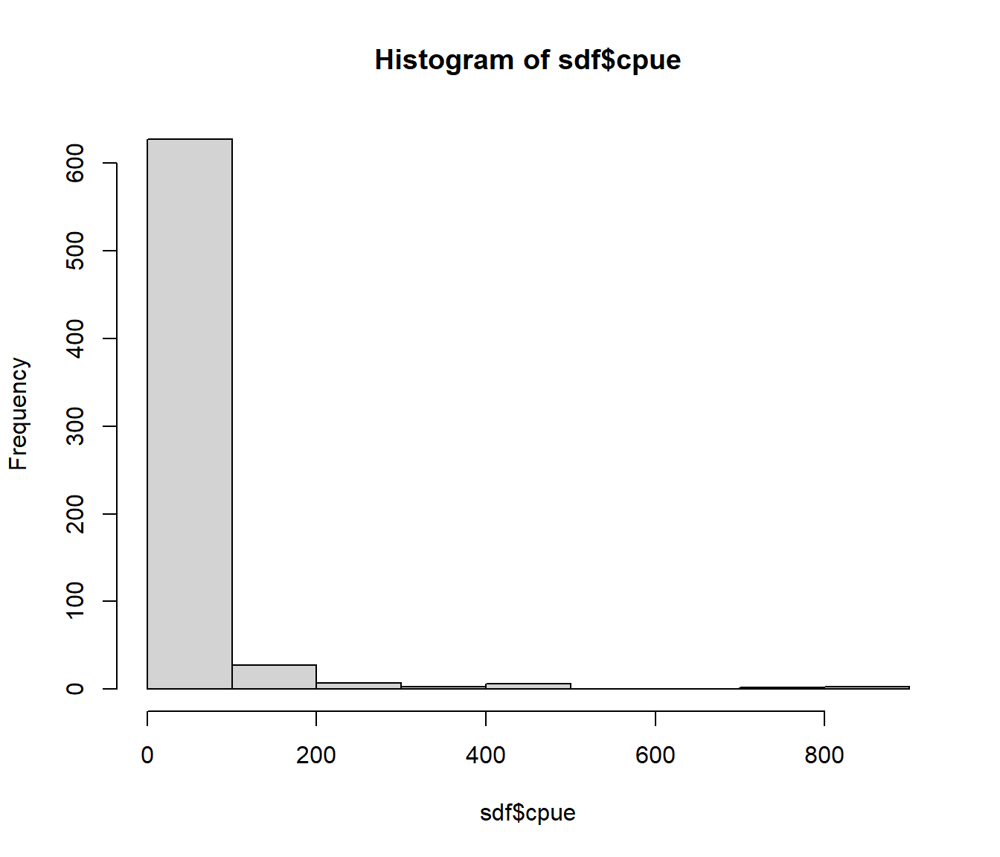
hist(sdf$lcpue)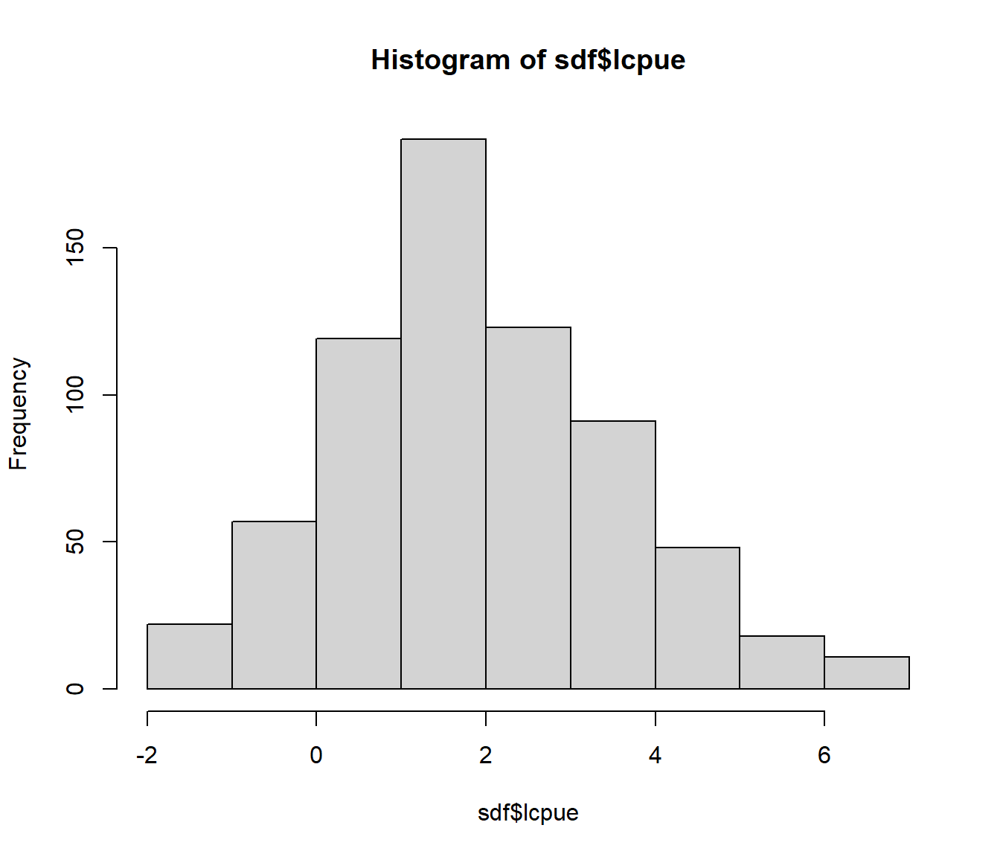
spplot(sdf, "lcpue")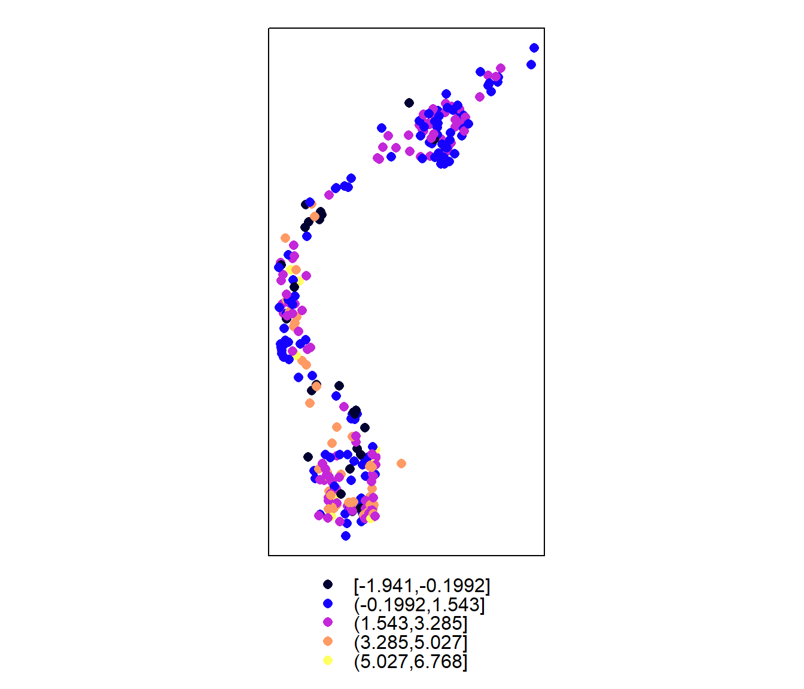
A.1.2 SpatialLines y SpatialPolygons
Tipo
SpatialLinesBasados en
Line:coordsSe combinan objetos
Lineen listas:lines, bbox, proj4stringDe utilidad principalmente para representaciones gráficas (y para generar polígonos).
Tipo
SpatialPolygonsBasados en
Polygon:labpt, area, hole, ringDir, coords(extiendeLinede forma que la primera y la última línea es la misma).Se combinan objetos
Polygonen listas:polygons, plotOrder, bbox, proj4string.De utilidad principalmente para representaciones gráficas (y
overlay).
Se extienden también a
Spatial*DataFrame(slotdata)SpatialPolygonsDataFrame: util para procesos reticulares.
A.1.2.1 Ejemplo SpatialLines
El fichero costa.galicia.txt contiene la costa de Galicia en formato Mapgen. Descargada del (difunto) Coastline Extractor
library(maptools) # Utilidades para convertir datos entre diferentes formatos espaciales## Checking rgeos availability: TRUEcosta.galicia <- MapGen2SL("datos/costa.galicia.txt", CRS("+proj=longlat +ellps=WGS84"))
summary(costa.galicia)## Object of class SpatialLines
## Coordinates:
## min max
## x -9.305495 -6.500147
## y 41.500846 43.791944
## Is projected: FALSE
## proj4string : [+proj=longlat +ellps=WGS84 +no_defs]plot(sdf, axes=TRUE)
plot(costa.galicia, add=TRUE)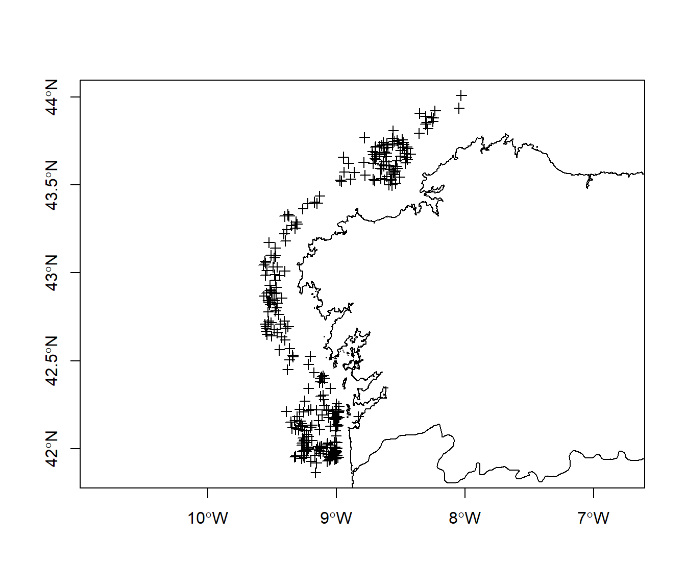
A.1.2.2 Ejemplo SpatialPolygonsDataFrame
Los objetos de este tipo se suelen crear a partir de objetos SpatialLines,
pero hay que asegurarse de que definen adecuadamente un polígono.
Objetos de este tipo se pueden descargar de GADM database of Global Administrative Areas. Contienen límites administrativos a disintos niveles, e.g.:
ESP_adm0.rdslímites España e islasESP_adm1.rdslímites AutonomíasESP_adm2.rdslímites ProvinciasESP_adm3.rdslímites ComarcasESP_adm4.rdslímites Ayuntamientos
NOTA: Se podrían descargar directamente desde R, e.g.:
con <- url('http://gadm.org/data/rda/ESP_adm1.rds')
gadm <- readRDS(con)
close(con)Carga de un objeto gadm:
gadm <- readRDS("datos/ESP_adm1.rds")
summary(gadm)## Object of class SpatialPolygonsDataFrame
## Coordinates:
## min max
## x -18.16153 4.328195
## y 27.63736 43.791527
## Is projected: FALSE
## proj4string :
## [+proj=longlat +datum=WGS84 +no_defs +ellps=WGS84 +towgs84=0,0,0]
## Data attributes:
## OBJECTID ID_0 ISO NAME_0
## Min. : 1.00 Min. :215 Length:18 Length:18
## 1st Qu.: 5.25 1st Qu.:215 Class :character Class :character
## Median : 9.50 Median :215 Mode :character Mode :character
## Mean : 9.50 Mean :215
## 3rd Qu.:13.75 3rd Qu.:215
## Max. :18.00 Max. :215
##
## ID_1 NAME_1 HASC_1 CCN_1
## Min. : 1.00 Length:18 Length:18 Min. : NA
## 1st Qu.: 5.25 Class :character Class :character 1st Qu.: NA
## Median : 9.50 Mode :character Mode :character Median : NA
## Mean : 9.50 Mean :NaN
## 3rd Qu.:13.75 3rd Qu.: NA
## Max. :18.00 Max. : NA
## NA's :18
## CCA_1 TYPE_1 ENGTYPE_1 NL_NAME_1
## Length:18 Length:18 Length:18 Length:18
## Class :character Class :character Class :character Class :character
## Mode :character Mode :character Mode :character Mode :character
##
##
##
##
## VARNAME_1
## Length:18
## Class :character
## Mode :character
##
##
##
## plot(gadm)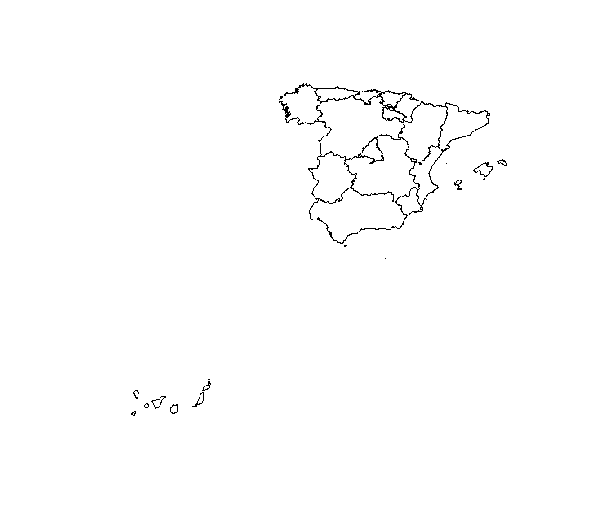
# Cuidado objeto muy grande: str(gadm)
# Mejor emplear str(gadm, 3)Extraer autonomía de Galicia:
names(gadm)## [1] "OBJECTID" "ID_0" "ISO" "NAME_0" "ID_1" "NAME_1"
## [7] "HASC_1" "CCN_1" "CCA_1" "TYPE_1" "ENGTYPE_1" "NL_NAME_1"
## [13] "VARNAME_1"galicia <- gadm[gadm$NAME_1 == "Galicia", ]
plot(galicia)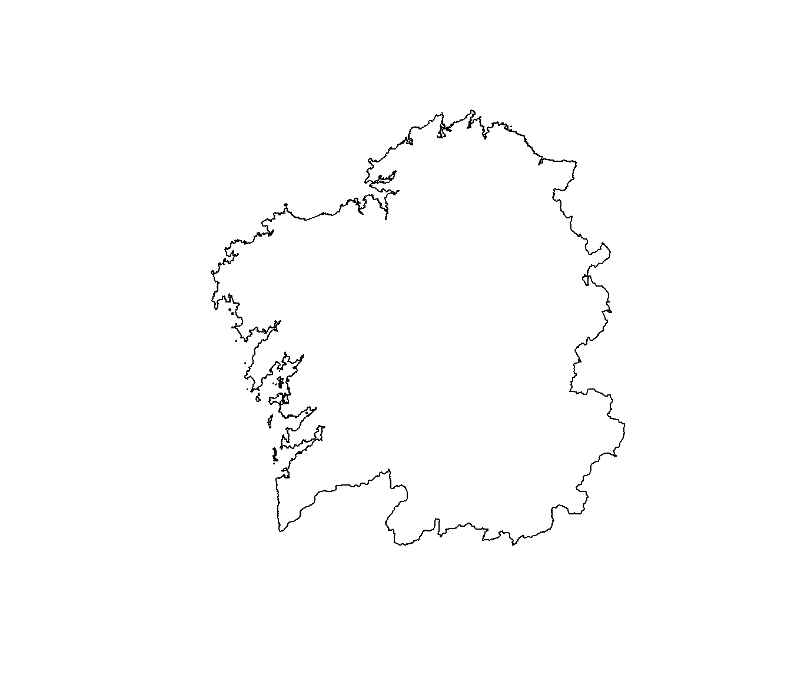
Es preferible emplear este tipo de objetos a SpatialLines:
plot(sdf, axes=TRUE)
plot(galicia, add=TRUE)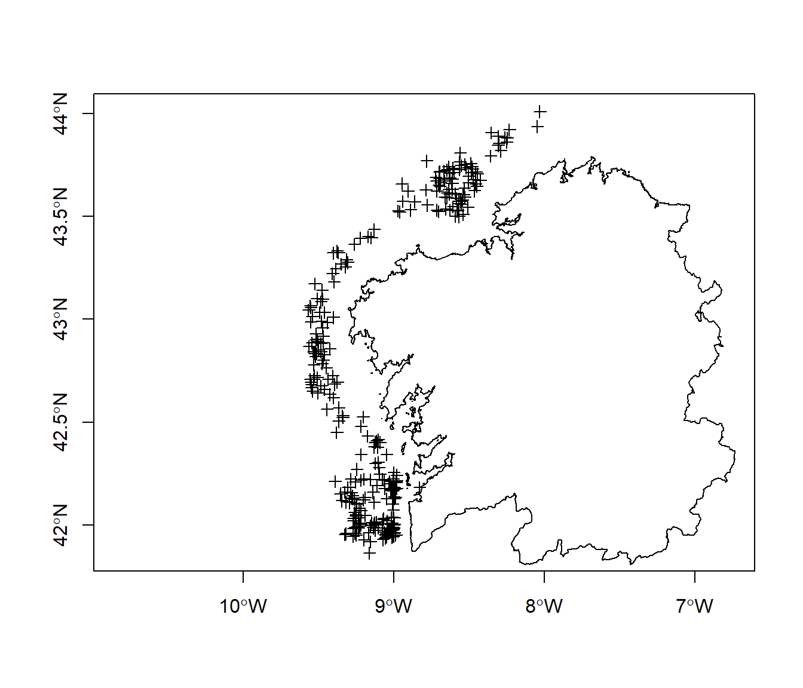
A.1.3 SpatialGrid y SpatialPixels
Es habitual trabajar con datos espaciales en formato rejilla (grid) (e.g. predicciones en geoestadística):
Rejilla (posiciones) definida por un objeto
GridTopology:cellcentre.offset, cellsize, cells.dimTipos
SpatialGridySpatialPixels:grid, grid.index, coords, bbox, proj4stringSe extienden también a
Spatial*DataFrame(slotdata)Los objetos
SpatialGridse corresponden con la rejilla completa:Los objetos
SpatialPixelsse corresponden con una rejilla incompletacoordscontiene todas las coordenadas (objetos equivalentes aSpatialPoints)grid.indexindices de la rejilla
A.1.3.1 Ejemplo SpatialGrid
Importante si se utiliza el paquete gstat…
xrange <- c(-10, -7.5)
yrange <- c(42.25, 44)
nx <- 100
ny <- 100
hx <- diff(xrange)/(nx-1)
hy <- diff(yrange)/(ny-1)
gridtop <- GridTopology(cellcentre.offset = c(min(xrange), min(yrange)),
cellsize = c(hx, hy), cells.dim = c(nx, ny))
spgrid <- SpatialGrid(gridtop, proj4string = proj4string(gadm))
str(spgrid)## Formal class 'SpatialGrid' [package "sp"] with 3 slots
## ..@ grid :Formal class 'GridTopology' [package "sp"] with 3 slots
## .. .. ..@ cellcentre.offset: num [1:2] -10 42.2
## .. .. ..@ cellsize : num [1:2] 0.0253 0.0177
## .. .. ..@ cells.dim : int [1:2] 100 100
## ..@ bbox : num [1:2, 1:2] -10.01 42.24 -7.49 44.01
## .. ..- attr(*, "dimnames")=List of 2
## .. .. ..$ : NULL
## .. .. ..$ : chr [1:2] "min" "max"
## ..@ proj4string:Formal class 'CRS' [package "sp"] with 1 slot
## .. .. ..@ projargs: chr "+proj=longlat +datum=WGS84 +no_defs"
## .. .. ..$ comment: chr "GEOGCRS[\"unknown\",\n DATUM[\"World Geodetic System 1984\",\n ELLIPSOID[\"WGS 84\",6378137,298.25722"| __truncated__plot(spgrid, axes = TRUE)
plot(galicia, add = TRUE)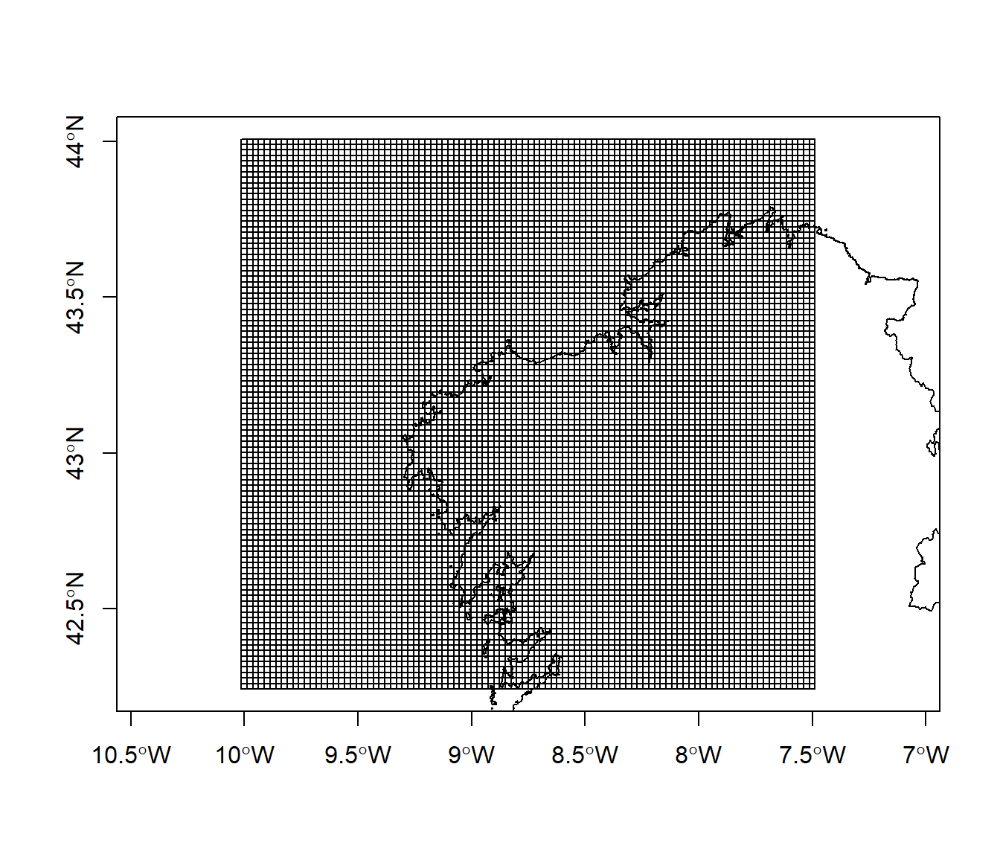
A.1.3.2 Ejemplo SpatialPixels
# over: combinación de objetos espaciales
index <- over(spgrid, as(galicia, "SpatialPolygons"))
sppix <- as(spgrid, "SpatialPixels")[is.na(index), ]
str(sppix)## Formal class 'SpatialPixels' [package "sp"] with 5 slots
## ..@ grid :Formal class 'GridTopology' [package "sp"] with 3 slots
## .. .. ..@ cellcentre.offset: num [1:2] -10 42.2
## .. .. ..@ cellsize : num [1:2] 0.0253 0.0177
## .. .. ..@ cells.dim : int [1:2] 100 100
## ..@ grid.index : int [1:5631] 1 2 3 4 5 6 7 8 9 10 ...
## ..@ coords : num [1:5631, 1:2] -10 -9.97 -9.95 -9.92 -9.9 ...
## .. ..- attr(*, "dimnames")=List of 2
## .. .. ..$ : NULL
## .. .. ..$ : chr [1:2] "s1" "s2"
## ..@ bbox : num [1:2, 1:2] -10.01 42.24 -7.49 44.01
## .. ..- attr(*, "dimnames")=List of 2
## .. .. ..$ : chr [1:2] "s1" "s2"
## .. .. ..$ : chr [1:2] "min" "max"
## ..@ proj4string:Formal class 'CRS' [package "sp"] with 1 slot
## .. .. ..@ projargs: chr "+proj=longlat +datum=WGS84 +no_defs"
## .. .. ..$ comment: chr "GEOGCRS[\"unknown\",\n DATUM[\"World Geodetic System 1984\",\n ELLIPSOID[\"WGS 84\",6378137,298.25722"| __truncated__plot(sppix, axes = TRUE)
plot(galicia, add = TRUE)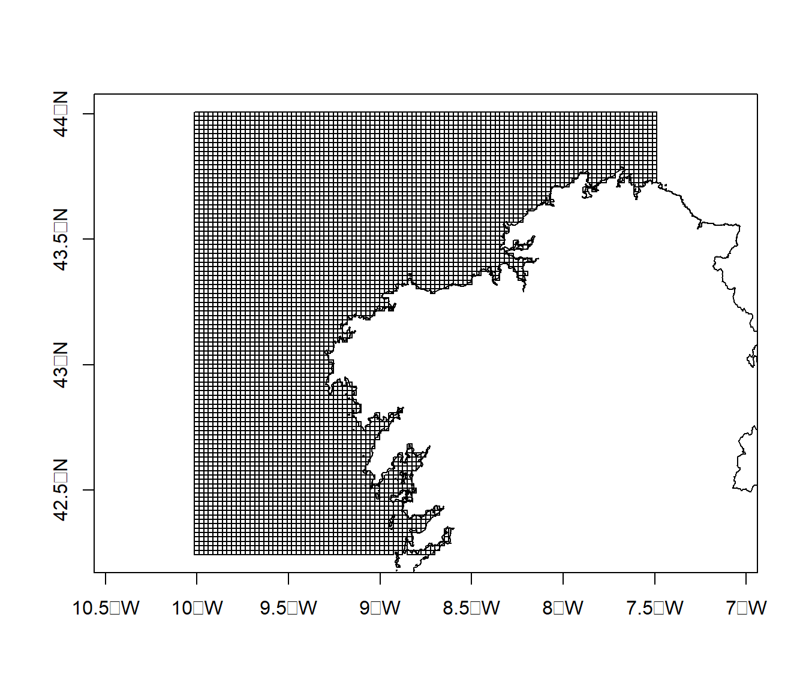
# NOTA: puede ser preferible asignar NA's a variables en SpatialGridDataFrame...
object.size(spgrid)## 4040 bytesobject.size(sppix)## 117680 bytes# Otras funciones:
# as(sppix, "SpatialGrid") recostruye la rejilla completa
# gridded(ObjetoSpatialPoints) <- TRUE convierte el objeto SpatialPoints en SpatialPixels